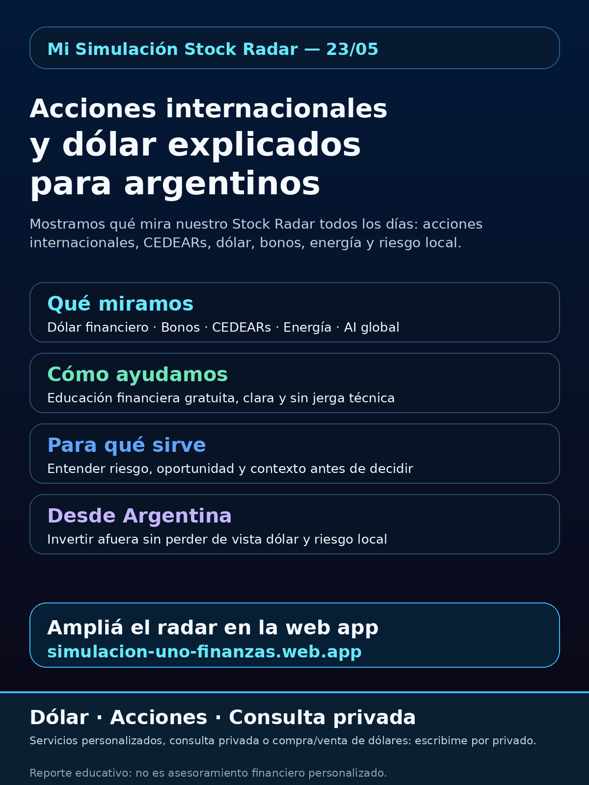

Mi Simulación Stock Radar — 23/05

Audio resumen
Mi Simulación Stock Radar — 23/05
1. Lectura simple del día
El objetivo de este radar no es decirle a nadie “comprá” o “vendé”. El objetivo es ordenar información para una persona en Argentina que quiere entender dólar, acciones, bonos, CEDEARs y riesgo antes de mover plata real.
La tesis de hoy es radar antes que impulso: mirar primero dólar financiero, energéticas argentinas, bonos que marcan MEP/CCL y CEDEARs de AI/globales como capa de aprendizaje.
Fuente de datos local usada: snapshot server-side de Simulación Uno Finanzas generado 2026-05-22T23:57:33-03:00. PPI status: conectado=True; datos públicos sin claves ni cuentas en navegador. Dólar: dolarapi.com. Web app: https://simulacion-uno-finanzas.web.app/
2. Dólar explicado para principiantes
- Oficial: $ 1.425. Referencia administrativa y comparativa.
- Blue: $ 1.425. Termómetro social.
- MEP: $ 1.434,30. Dólar legal vía mercado local.
- CCL: $ 1.486,60. Dólar financiero para dolarización/salida vía mercado.
Brecha MEP vs oficial: 0.7%. Brecha CCL vs oficial: 4.3%. Traducción: una brecha más alta puede mostrar tensión, pero no decide sola. Importan monto, plazo, necesidad de liquidez y tolerancia al riesgo.
3. Mapa de radar local
Energía argentina
- YPFD — YPF: en radar. Precio $ 71.025; variación 0.24%. Lectura: Energética nacional clave; prioridad explícita de StockRadar. Fuente: PPI MarketData/Current, 2026-05-22T17:00:03.574-03:00.
- PAMP — Pampa Energía: en radar. Precio $ 4.782,50; variación -1.13%. Lectura: Generación eléctrica y gas; proxy local de energía e infraestructura. Fuente: PPI MarketData/Current, 2026-05-22T17:00:03.553-03:00.
- CEPU — Central Puerto: señal fortalecida. Precio $ 2.077; variación -3.03%. Lectura: Generación eléctrica local; sensible a tarifas, demanda y regulación. Fuente: PPI MarketData/Current, 2026-05-22T17:00:03.233-03:00.
- TGSU2 — Transportadora de Gas del Sur: en radar. Precio $ 8.685; variación -1.8%. Lectura: Gas/midstream argentino; observar marco regulatorio y Vaca Muerta. Fuente: PPI MarketData/Current, 2026-05-22T17:00:03.294-03:00.
- TGNO4 — Transportadora de Gas del Norte: en radar. Precio $ 3.950; variación -1.74%. Lectura: Transporte de gas; radar local por infraestructura energética. Fuente: PPI MarketData/Current, 2026-05-22T17:00:03.292-03:00.
- EDN — Edenor: en radar. Precio $ 1.802; variación -2.06%. Lectura: Distribución eléctrica; proxy regulatorio/tarifario. Fuente: PPI MarketData/Current, 2026-05-22T17:00:03.519-03:00.
- TRAN — Transener: en radar. Precio $ 3.890; variación 1.83%. Lectura: Transmisión eléctrica; infraestructura crítica local. Fuente: PPI MarketData/Current, 2026-05-22T17:00:03.301-03:00.
Bonos / dólar financiero
- AL30 — Bono AL30: en radar. Precio $ 91.500; variación 0.54%. Sirve para mirar MEP/CCL, liquidez y riesgo argentino. Fuente: PPI MarketData/Current, 2026-05-22T17:00:09.799-03:00.
- GD30 — Bono GD30: en radar. Precio $ 92.900; variación 0.37%. Sirve para mirar MEP/CCL, liquidez y riesgo argentino. Fuente: PPI MarketData/Current, 2026-05-22T17:00:13.79-03:00.
CEDEARs / AI global desde Argentina
- NVDA — NVIDIA CEDEAR: en radar. Precio local $ 13.370; variación -1.25%. Lectura: seguir AI/mercado global, pero con doble capa: acción afuera + dólar local. Fuente: PPI MarketData/Current, 2026-05-22T17:00:01.721-03:00.
- TSM — TSMC CEDEAR: en radar. Precio local $ 66.675; variación 0.03%. Lectura: seguir AI/mercado global, pero con doble capa: acción afuera + dólar local. Fuente: PPI MarketData/Current, 2026-05-22T17:00:01.493-03:00.
- PLTR — Palantir CEDEAR: en radar. Precio local $ 67.850; variación 0.14%. Lectura: seguir AI/mercado global, pero con doble capa: acción afuera + dólar local. Fuente: PPI MarketData/Current, 2026-05-22T17:00:02.045-03:00.
- GOOGL — Alphabet CEDEAR: en radar. Precio local $ 9.805; variación -0.65%. Lectura: seguir AI/mercado global, pero con doble capa: acción afuera + dólar local. Fuente: PPI MarketData/Current, 2026-05-22T17:00:00.902-03:00.
- SPY — S&P 500 CEDEAR: en radar. Precio local $ 55.425; variación 0.91%. Lectura: seguir AI/mercado global, pero con doble capa: acción afuera + dólar local. Fuente: PPI MarketData/Current, 2026-05-22T17:00:01.851-03:00.
4. Qué significa cada etiqueta
- En radar: vale seguir y entender; no implica compra.
- Señal fortalecida: hubo movimiento o señal que merece más atención; requiere análisis humano.
- No accionable: falta fuente, instrumento, liquidez, precio razonable o contexto personal.
5. Modo principiante
- Una acción es una parte de una empresa. Puede subir o bajar. No es plazo fijo.
- Un bono es deuda y, en Argentina, también ayuda a leer dólar MEP/CCL y riesgo.
- Un CEDEAR permite mirar empresas de afuera desde Argentina, pero no elimina riesgo cambiario ni de liquidez.
- Spread es la diferencia entre precio comprador y vendedor; si es alto, entrar y salir sale caro.
- Liquidez es qué tan fácil es comprar o vender sin romper el precio.
- Radar no es recomendación: es una herramienta para ordenar preguntas.
6. Web app nueva
La web app de Simulación Uno Finanzas queda como destino de expansión: radar de hoy, dólar explicado, cards de activos, modo principiante, simulador educativo y área privada prototipo para guardar intereses o pedir consulta.
https://simulacion-uno-finanzas.web.app/
7. Red flags
- No actuar por ansiedad.
- No tomar “en radar” como “comprar”.
- No mirar CEDEARs sin entender CCL, spread y liquidez.
- No mirar energéticas sin entender regulación, tarifas, deuda y contexto político.
- No cargar una cartera sin horizonte ni fondo de emergencia.
8. Qué mirar después
- Dólar MEP/CCL y brecha contra oficial.
- Volumen real en energéticas argentinas.
- AL30/GD30 como termómetro de tensión financiera.
- CEDEARs de AI: si se mueven por empresa o por dólar local.
- Noticias/fuentes detrás de cualquier movimiento fuerte.
CTA privado
Dólar · Acciones · Consulta privada
Compra/venta de dólares, CEDEARs, acciones y estrategia personal: escribime por privado y lo vemos caso por caso.
Este reporte es informativo y educativo. No es asesoramiento financiero personalizado ni promesa de resultado.